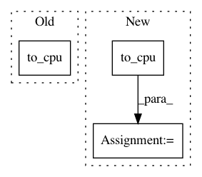

ace528fe1568714c24ef3287f95d9668de638fc3,tests/links_tests/model_tests/ssd_tests/test_multibox_loss.py,TestMultiboxLoss,_check_forward,#TestMultiboxLoss#Any#Any#Any#Any#Any#,43
Before Change
self.assertEqual(conf_loss.dtype, mb_confs.dtype)
if self.variable:
mb_locs = cuda.to_cpu(mb_locs.data)
mb_confs = cuda.to_cpu(mb_confs.data)
gt_mb_locs = cuda.to_cpu(gt_mb_locs.data)
gt_mb_labels = cuda.to_cpu(gt_mb_labels.data)
loc_loss = cuda.to_cpu(loc_loss.data)
After Change
gt_mb_labels = gt_mb_labels.data
mb_locs = cuda.to_cpu(mb_locs)
mb_confs = cuda.to_cpu(mb_confs)
gt_mb_locs = cuda.to_cpu(gt_mb_locs)
gt_mb_labels = cuda.to_cpu(gt_mb_labels)
loc_loss = cuda.to_cpu(loc_loss.data)
conf_loss = cuda.to_cpu(conf_loss.data)
In pattern: SUPERPATTERN
Frequency: 4
Non-data size: 3
Instances
Project Name: chainer/chainercv
Commit Name: ace528fe1568714c24ef3287f95d9668de638fc3
Time: 2017-07-06
Author: Hakuyume@users.noreply.github.com
File Name: tests/links_tests/model_tests/ssd_tests/test_multibox_loss.py
Class Name: TestMultiboxLoss
Method Name: _check_forward
Project Name: tsurumeso/waifu2x-chainer
Commit Name: 47c278eb84143ccdb0b8ff7bec8bce23830fefcc
Time: 2018-10-05
Author: tsurumeso@gmail.com
File Name: lib/reconstruct.py
Class Name:
Method Name: blockwise
Project Name: chainer/chainercv
Commit Name: 264fb1dd9fd350c9fa0bd6aec61b993a6334b987
Time: 2017-06-05
Author: Hakuyume@users.noreply.github.com
File Name: examples/ssd/train.py
Class Name:
Method Name: main
Project Name: chainer/chainercv
Commit Name: 1a283b11bd58c2571c3c10264d879caae09689ea
Time: 2017-06-05
Author: Hakuyume@users.noreply.github.com
File Name: chainercv/links/model/ssd/ssd.py
Class Name: SSD
Method Name: to_cpu